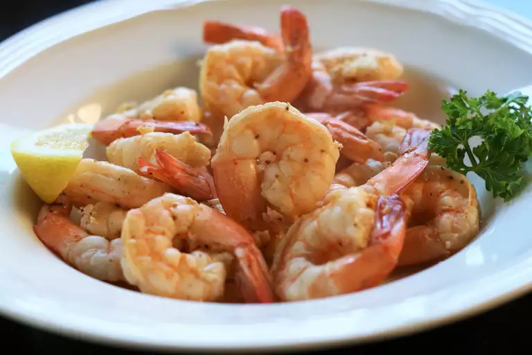

Old Bay-Seasoned Shrimps

Description
Easy, spicy, steamed shrimp with Old Bay seasoning.
Great for a super-quick dinner with a salad.
Ingredients
- ½ cup water
- ½ cup white vinegar
- 2 tablespoons seafood seasoning (such as Old Bay®)
- 1 pound fresh largs shrimp, deveined with shells on
Steps
- Bring water, vinegar and seafood seasoning to a boil in a saucepan over high heat.
- Add shrimp and stir.
- Reduce heat to medium, cover and steam, stirring once or twice until bringt orange ni color. (3-5 Minutes)
- Drain & enjoy your juicy dinner.